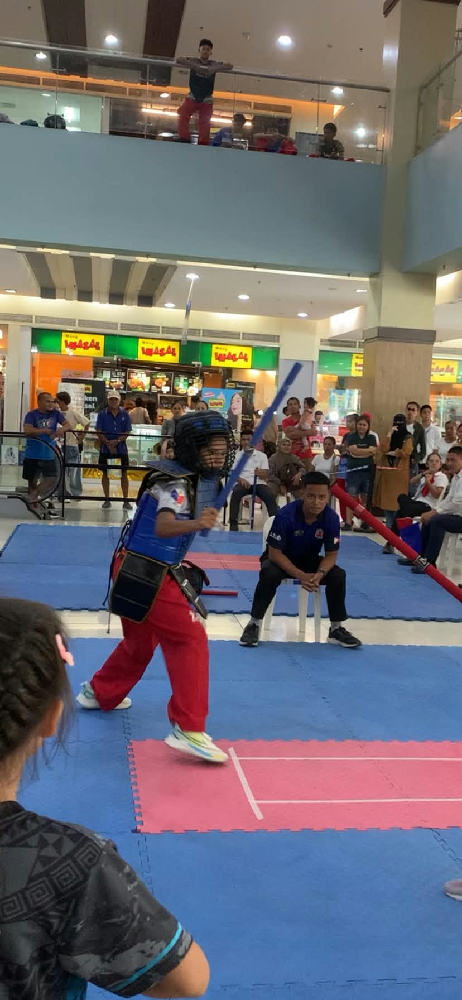

Hi!
My name is Ronalyn S. Florentino. I am currently a 3rd-year Bachelor of Science in Information Technology (BSIT) student and an active Arnis player. My passion for Arnis the national martial art of the Philippines began back in Grade 7. Over the years, practicing Arnis has been more than just a sport for me it has taught me discipline, focus, agility, and respect. Staying dedicated to the sport from high school all the way into my college years has shaped who I am today, proving that hard work and perseverance always pay off. As a 3rd-year BSIT student, I am constantly learning and exploring the world of technology and computing. Balancing the rigorous demands of an IT degree with athletic training requires high discipline and time management, but it drives me to grow both intellectually and physically every day. Whether Im training on the mat with my sticks or working on my technology coursework, I strive to give my best in everything I do. I take pride in being both a student and an athlete, continuously striving for personal excellence in all aspects of life.
Email me at ronalynflorentino15@gmail.com